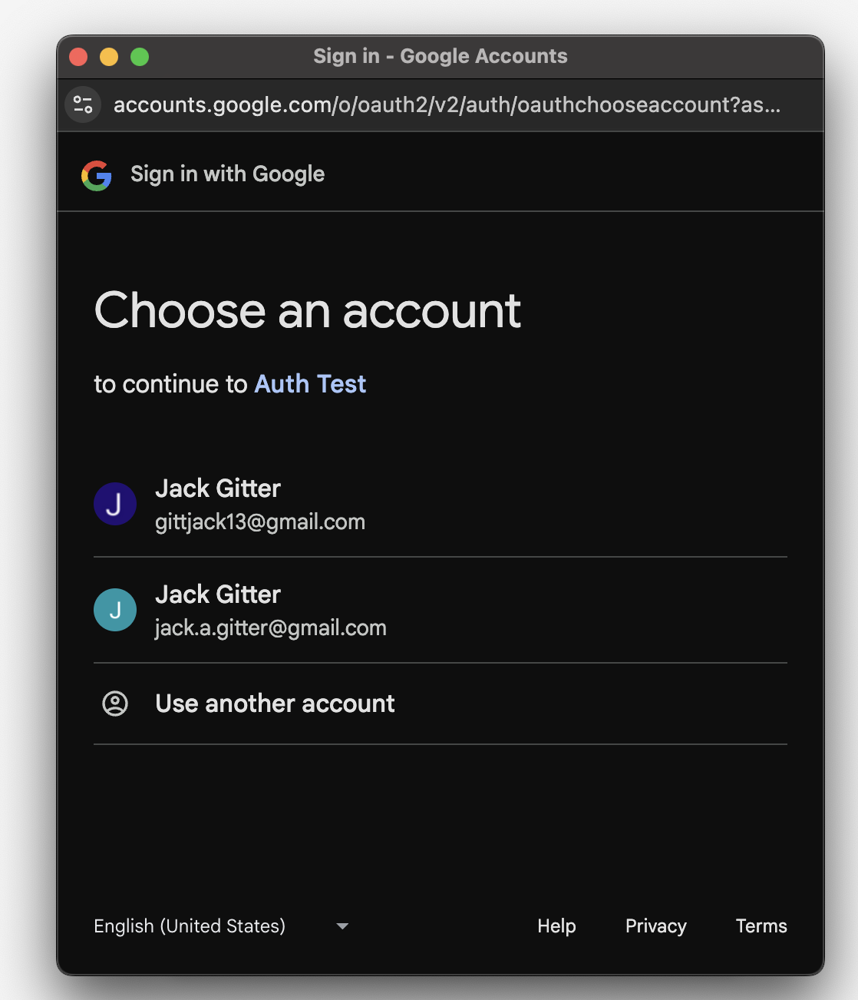
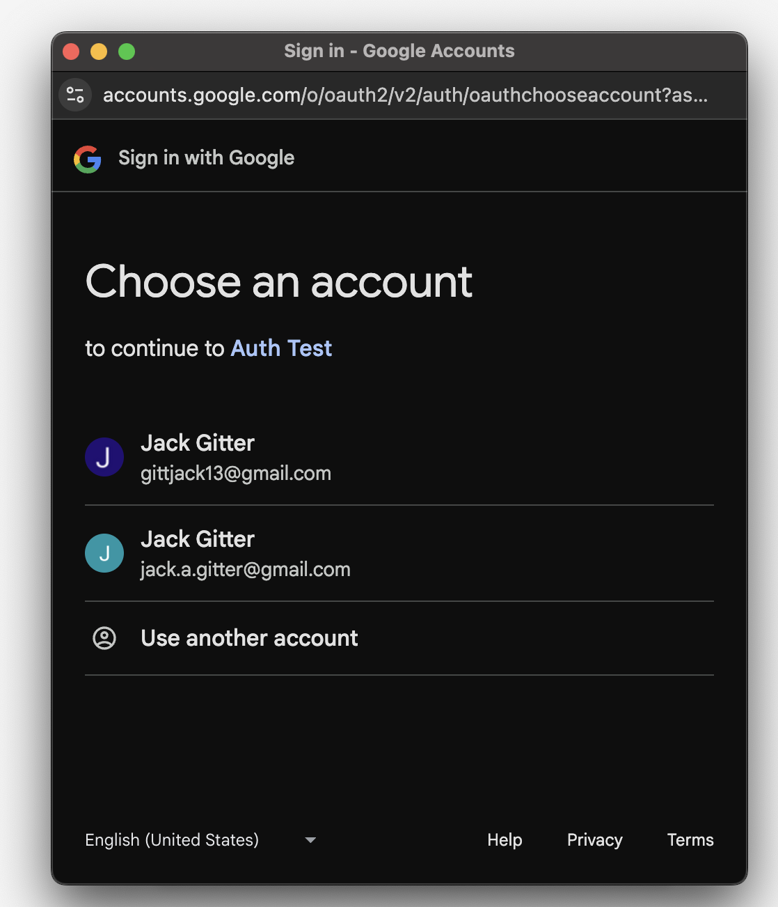

All About Auth
September 24, 2025
Authentication and authorization are two critical parts of any software which has the notion of a "user". Authentication allows a user or system to prove that they are who they say they are, and authorization gives an entity access to protected resources. The combination of these two principals allows for complex and robust user management, and a plethora of protocols, frameworks, and jargon to go along with it. I have created a small application which demonstrates multiple auth flows, and will be referencing it throughout the article.
OAuth
OAuth is an authorization framework built to grant access to resources from one application to another. It is not concerned with who is making a request for information, but only if that request is allowed or not. Here are some important terms that oauth defines- Client
- The server requesting protected resources.
- Resource Server
- The server which contains protected resources.
- Authorization Server
- The server which issues access tokens, refresh tokens, etc.
- Access Token
- A string which is sent with requests to a resource server. The resource server uses the access token to determine whether or not the request is valid.
- Refresh Token
- A string which is used to obtain a new access token when the current one expires.
- Opaque Tokens
- Access tokens which are not decipherable by the client application. They only "mean" something to the server.
- JWT
- A token format which is decipherable by the client application. The client application is able to view what access is defined for the provided token. A JWT is also signed, and not encrypted in any way. The signature helps the server know that the token has not been tampered with in or before transit.
- Scopes
- A description of what resources the access token gives the client access to.
In general, the OAuth flow is initiated when an application needs access to a users resources. The client application redirects the user to the authorization server's sign-in page, where the user enters their credentials. During the sign-in process, the user is asked to accept a list of scopes that the client application is requesting. After the user successfully logs in and accepts these scopes, they are redirected back to the client application.
Local vs Provided Access Tokens
A provided access token is an access token which is provided to an application from a third party authorization server, think google, okta, etc. A local access token is one issued by a server that in-house developers control. Provided access tokens are useful for reaching out to third party resource servers to fetch user data, while local access tokens can be used to protect a backend HTTP server which serves content from a database that you own.Provided Access Tokens
The following is a concrete example of an OAuth flow implemented with a simple local express server and Google's auth server. First, the action is kicked off when the user clicks on the "Get Access Token" button. It sends a request to an endpoint hosted via express, which executes the following code.
export function redirect_to_google_acess_token_auth(req:Request, res:Response) {
const oauth2Client = new google.auth.OAuth2({
clientId: process.env.CLIENT_ID ?? '',
clientSecret: process.env.CLIENT_SECRET ?? '',
redirectUri: 'http://localhost:3000/login/access/google'
}
);
const scopes = [
'https://www.googleapis.com/auth/blogger',
'https://www.googleapis.com/auth/calendar',
'https://www.googleapis.com/auth/userinfo.email',
'https://www.googleapis.com/auth/userinfo.profile'
];
const url = oauth2Client.generateAuthUrl({
access_type: 'offline',
scope: scopes
});
res.redirect(url)
}
Firstly, the code initializes the google OAuth2 client library for nodejs. We provide the client a clientID and secret, which can be found in the google dashboard after creating a project there. Additionally supplied to the OAuth2 client is a redirect URI. This is where Google will reidrect to after the end user finishes the authorization process. Also defined are scopes that our application is requesting access to. During the auth process, a popup will appear and ask the user to confirm the application can have access to said resources. Finally, the OAuth2 library is used to generate the url to the auth server login form, and express redirects the browser there. Once the user is redirected, they are greeted with a normal google login screen.
After entering their credentials, they are asked to accept the scopes
Clicking on the "5 Services" button reveals the scopes that we defined earlier in the code when generating the redirect url
After the user accepts the scopes, google redirects to the provided redirect URI, which hosts an HTTP endpoing via express. Google will send us an authorization code, which our backend will have to parse from the query parameters and exchange for an access token.
export async function auth_access_token(req: Request, res: Response) {
const code = req.query.code as string
const oauth2Client = new google.auth.OAuth2({
clientId: process.env.CLIENT_ID ?? '',
clientSecret: process.env.CLIENT_SECRET ?? '',
redirectUri: 'http://localhost:3000/login/access/google'
}
);
try {
const { tokens } = await oauth2Client.getToken(code)
const accessToken = tokens.access_token
const refreshToken = tokens.refresh_token
const expiresIn = tokens.expiry_date ?? Date.now() + 60 * 60
res.cookie('access_token', token)
res.cookie('refresh_token', token)
res.redirect('http://localhost:3001')
} catch (e) {
if (e instanceof Error) {
res.status(400).send(e.message)
} else {
res.status(500).send('Something went wrong')
}
}
}
After we recieve our access (and refresh) token(s), we then can set them as cookies for the frontend to store, and redirect the user back to our application. It can be seen that the user status in the top left has now changed to indicate they are logged in. The check simply verifies the existance of the access token and refresh tokens in the cookies.
 This flow demonstrated is known as the "Authorization Code Flow", and is the most common amongst web applications. In reality, this code is a slight modification of what is actually in the repository, as it follows a local access token pattern.
This flow demonstrated is known as the "Authorization Code Flow", and is the most common amongst web applications. In reality, this code is a slight modification of what is actually in the repository, as it follows a local access token pattern.
Local Access Tokens
Often times, the resource server which the frontend application will be requesting data from is actually in-house. Additionally, it is extremely common for applications to have a local notion of a user, with specific roles and permissions which do not make sense outside of that application's context. The implementation of this often manifests in the form of permissions and roles stored in a database, associated with some sort of user object. When this is the case, this information is required to figure out if the client requesting data from the resource server is allowed to access it. During the auth flow, this information must be encapsulated in the access token and be readable by the in-house resource server. The token that is a result of the encapsulation of all of this data is known as a local access token. Generally speaking, after an access token is retrieved from a third party such as google, data about the sepcific user is looked up in an internal database. That data, along with any other data fetched via the access token and third-party apis, is wrapped up in a JWT and signed with an internal private key, and returned to the frontend. On requests to an internal resource server, this JWT is provided and verified with our own private key. The JWT acts as the local access token in this example.
It is still useful to have users log in via a third party auth server initially such as google,
to keep password management, verification, and other complexities to a proven system
Within the same application, the implementation has been extended to include the creation of a local access token by wrapping the provided google access token
with a customized JWT, containing application specific information such user roles. Before looking at the JWT creation,
it is important to understand the specifics about what application-specific information is, and how it might be stored.
In order to keep track of user roles, there are two entities, the User entity and the Role entity
@Entity()
export class User {
@Column({primary: true})
email: string
@ManyToMany(() => Role, {cascade: true})
@JoinTable()
roles: Role[]
}
@Entity()
export class Role {
constructor(type: ROLE_TYPE) {
this.type = type
}
@PrimaryGeneratedColumn()
id: number
@Column({type: 'enum', enum: ROLE_TYPE, default: ROLE_TYPE.viewer, unique: true})
type: ROLE_TYPE
}
The user only has a simple email field. The roles have a primary key, along with a type. Typeorm generates a join table automatically when using the ManyToMany decorator.
In the database, there exists both an admin and a manager role, with a singular user who contains both roles
Here, we simply have one user in the database. This user is created whenever someone signs in with google via the following code
export async function auth_access_token(req: Request, res: Response) {
const code = req.query.code as string
const oauth2Client = new google.auth.OAuth2({
clientId: process.env.CLIENT_ID ?? '',
clientSecret: process.env.CLIENT_SECRET ?? '',
redirectUri: 'http://localhost:3000/login/access/google'
}
);
try {
const { tokens } = await oauth2Client.getToken(code)
const accessToken = tokens.access_token
const refreshToken = tokens.refresh_token
const expiresIn = tokens.expiry_date ?? Date.now() + 60 * 60
const response = await fetch( `https://www.googleapis.com/oauth2/v2/userinfo?access_token=${accessToken}`)
const json = await response.json() as UserInfo
const email = json.email
const userRepository = dataSource.getRepository(User)
let user = await userRepository.findOne({ where: {email}, relations: ['roles']})
if (!user) {
user = await userRepository.save({email})
}
... more code to come ...
}
Here, it can be seen that the Google access token is used to fetch the user's info from Google's resource server, which contains the user email. Then, the user is looked-up in the local database via said email. If the user does exist, the auth flow continues as normal. If not, then a user is inserted into the database with the given email.
This is all done via typeorm's repository API.
 Here are two roles which have been created created, and are assignable to users, along with
the join table created by typeorm automatically after defining the many to many relationship,
which contains the assignment of roles to users. Now that the schema and data has been explained,
we can take a look at the code which extracts role information from the database.
Here are two roles which have been created created, and are assignable to users, along with
the join table created by typeorm automatically after defining the many to many relationship,
which contains the assignment of roles to users. Now that the schema and data has been explained,
we can take a look at the code which extracts role information from the database.
... more code to come ...
user.roles = user.roles ?? []
const roles = user.roles.map(role => role.type)
const jwtPayload: JWTPayload = {
...json,
sub: '',
iss: 'Test App',
aud: 'Test App',
roles: roles,
accessToken: accessToken ?? undefined,
refreshToken: refreshToken ?? undefined,
authProvider: AUTH_PROVIDER.google,
}
const token = jwt.sign(jwtPayload, process.env.JWT_SECRET ?? '')
res.cookie('jwt', token, {maxAge: expiresIn}).redirect('http://localhost:3001')
} catch (e) {
if (e instanceof Error) {
res.status(400).send(e.message)
} else {
res.status(500).send('Something went wrong')
}
}
}
in this code, the user roles after retriving the user from the database, or creating the user. In the case where the user is newly created, the roles would be empty array.
In this example's case, the user does has both the admin and manager roles assigned. These are fetched these from the database,
and then inserted into the "roles" field of our JWT. Additionally, a couple of other things are added to the JWT payload. All of the information retrieved
from the userinfo query to Google's, the access and refresh tokens for our google access token, and some metadata of the token issuer.
The JWT is then created and signed with an internal private key, and afterwards is set into the set-cookie response header. The user is then redirected back to the frontend.
On subsequent reqeusts, the browser automatically sends the JWT to our backend. It's signature can be verified with the application's secret key to ensure it has not been tampered
with, and the user roles can be analyzed to see if the requestor has access to the resource.
 This is what the cookie looks like after it is set in the browser
This is what the cookie looks like after it is set in the browser
 This is what the actual payload contained in the JWT looks like. Here, the "roles" field is visible, and accurately portrays the user roles stored in the database
This is what the actual payload contained in the JWT looks like. Here, the "roles" field is visible, and accurately portrays the user roles stored in the database
Idps
And IDP, also known as an Identity provider, is a service that helps to create and store users and associated information, along with providing management tools and authentication processes. By utilizing an IDP, applications do not have to worry about a lot of the overhead that comes with managing all aspects of users, and can instead only focus on small aspects specific to the application itself. Stytch is one of many available IDPs, and I will be using it as an example to demonstrate the capabilities that come OOTB with many providers. In the same project, I have created a stytch authentication flow which allows users to log in or sign up with their email, and will receive a one time link to their email to access the application. In order to achieve this, the first step is to utilize the OOTB stytch UI components that come included with the javascript library. To register the UI component, the code looks like so:
import { StytchUIClient } from "https://www.unpkg.com/@stytch/vanilla-js@2.0/dist/index.esm.js";
import { Products } from 'https://www.unpkg.com/@stytch/vanilla-js@0.9.5/dist/index.esm.js';
export const stytch = new StytchUIClient('public-token-test-3d5ee7dd-f46e-4831-9b87-ad30dd8d39b0');
const REDIRECT_URL = 'http://localhost:3000/login/stytch';
const config = {
products: [Products.emailMagicLinks],
emailMagicLinksOptions: {
loginRedirectURL: REDIRECT_URL,
loginExpirationMinutes: 60,
signupRedirectURL: REDIRECT_URL,
signupExpirationMinutes: 60,
},
};
const styles = {
container: {
width: '100%',
},
buttons: {
primary: {
backgroundColor: '#4A37BE',
borderColor: '#4A37BE',
},
},
};
const callbacks = {
onEvent: (message) => console.log(message),
onError: (error) => console.log(error),
};
stytch.mountLogin({
elementId: '#stytch-sdk',
styles,
config,
callbacks,
});
To use this component, all that is required is importing the script into the index.html file, and including a component with an "id"=stytch-sdk. Important to note is the redirect_url, which is where the user is redirected to after clicking the link they receive in the email. After the component is rendered, it looks like so
 After entering an email, stytch offers to automatically bring the user to their email provider, so that they can easily access the log in link
Finally, the user receives the email, which redirects the browser to our specified redirect URL
The code which handles the redirect is locacted in our backend application, and looks like so
After entering an email, stytch offers to automatically bring the user to their email provider, so that they can easily access the log in link
Finally, the user receives the email, which redirects the browser to our specified redirect URL
The code which handles the redirect is locacted in our backend application, and looks like so
export async function stytchAuth(req: Request, res: Response) {
const token = req.query.token as string
const client = new stytch.Client({
project_id: process.env.STYTCH_ID ?? '',
secret: process.env.STYTCH_SECRET ?? ''
});
const params = {
token,
session_duration_minutes: 60,
};
try {
const response = await client.magicLinks.authenticate(params)
const jwt = response.session_jwt
const content = await client.sessions.authenticateJwtLocal({session_jwt: jwt})
const userResponse = await client.users.get({user_id: content.user_id})
const email = userResponse.emails[0]?.email as string
const userRepository = dataSource.getRepository(User)
let user = await userRepository.findOne({ where: {email}, relations: ['roles']})
if (!user) {
user = await userRepository.save({email})
}
userResponse.roles = userResponse.roles ?? []
const roles = user.roles.map(role => role.type)
const ourjwt: JWTPayload = {
...content,
aud: 'Test Auth',
iss: 'Test Auth',
sub: content.user_id,
roles,
authProvider: AUTH_PROVIDER.stytch,
accessToken: undefined,
refreshToken: undefined
}
res.cookie('jwt', ourjwt, {maxAge: Date.now() + 60 * 60}).redirect('http://localhost:3001')
} catch (error) {
if (error instanceof Error) {
res.status(400).send(error.message)
} else {
res.status(500).send('Something went wrong')
}
}
}
To start, the endpoint expects a token which can be authenticated via the stytch library authenticate method. This is exchanged for an object which contains a lot of metadata about the
user, along with session tokens that can be used to interact with stytch. These tokens act as access tokens to the stytch API,
and can be used to retrieve all sorts of user information. After then authenticating the JWT, we proceed as normal, either creating or looking up the user, and wrapping the roles and
other user metadata in the JWT. It is signed the same, and set in the same cookie as we have seen previously. After this, the user is once again redirected to the frontend application
Authentication
Authentication is the process of a user proving that they are who they say they are. While authorization only cares that the requestor has access to the resource, authentication is the process of a user entering credentials to verify themselves.OIDC
OIDC is an authentication layer that is built ontop of the OAuth 2.0 Authorization framework. Rather than recieving an access token, after completing the OIDC flow applications recieve an ID Token, which often times is in the form of a JWT. This JWT has user information, and indicates that the user has successfully logged in and proven their identity. There are a couple of different way to obtain an ID Token from an auth server, but in in this application I have integrated with Google's auth server in order to retrieve an ID Token directly after the user authenticates with the google auth server. In order to start, first the google UI component is registered for users to log in with. The component looks like so. You can see that after the user authenticates, they will be redirected to our login endpoint in the backend
<div class="auth-container">
<h1 class="auth-title">Google ID Token Auth</h1>
<div class="signin-wrapper">
<div id="g_id_onload"
data-client_id="redacted :)"
data-login_uri="http://localhost:3000/login/id/google"
data-auto_prompt="false">
</div>
<div class="g_id_signin"
data-type="standard"
data-size="large"
data-theme="outline"
data-text="sign_in_with"
data-shape="rectangular"
data-logo_alignment="left">
</div>
</div>
</div>
And the UI component itself looks like so
 After clicking on the button to sign in with google, the user is asked to select an account

Notice with this flow, there is no mention of scopes. This is because the token that is provided to our backend endpoint upon redirection is not an access token. Therefore, no scopes
are required as the token only contains data about who the user is, and does not grant the application with access to any other information. This user information can be used to create, yet again, a local access token
After clicking on the button to sign in with google, the user is asked to select an account

Notice with this flow, there is no mention of scopes. This is because the token that is provided to our backend endpoint upon redirection is not an access token. Therefore, no scopes
are required as the token only contains data about who the user is, and does not grant the application with access to any other information. This user information can be used to create, yet again, a local access token
export async function auth_id_token(req: Request, res: Response) {
const IdToken = req.body.credential as string
const csrfToken = req.body.g_csrf_token as string
const csrfCookie = req.cookies.g_csrf_token as string
if (csrfToken !== csrfCookie) {
res.status(401).send('Nice try')
}
const client = new OAuth2Client();
const ticket = await client.verifyIdToken({
idToken: IdToken,
audience: process.env.CLIENT_ID as string,
});
const payload = ticket.getPayload();
try {
const email = payload?.email as string
const userRepository = dataSource.getRepository(User)
let user = await userRepository.findOne({ where: {email}, relations: ['roles']})
if (!user) {
user = await userRepository.save({email})
}
user.roles = user.roles ?? []
const roles = user.roles.map(role => role.type)
const jwtPayload: JWTPayload = {
...payload,
sub: email,
iss: 'Test App',
aud: 'Test App',
roles: roles,
accessToken: undefined,
refreshToken: undefined,
authProvider: AUTH_PROVIDER.google,
}
const token = jwt.sign(jwtPayload, process.env.JWT_SECRET ?? '')
res.cookie('jwt', token, {maxAge: Date.now() + 60 * 60}).redirect('http://localhost:3001')
} catch (error) {
if (error instanceof Error) {
res.status(400).send(error.message)
} else {
res.status(500).send('Something went wrong')
}
}
}
The code in the beginning again is a bit different, as this time we must first verify the csrf token sent to us in the body of the request matches the cookie set by google.
If these two match, we know that we have truely recieved a request from google. After this, we must verify the Id token using google's library. After this is verified, we
can extract the user email from the payload, and then proceed as normal to insert or find our user, and create a JWT from the information. Typically an ID token is not meant
to be sent to a resource server, as it contains no information about what the user hitting the endpoint has access to. In this case, we are still apart of the login flow, and it is
technically being sent to our local auth server, despite the auth server and resource server being the same for simplicity sake.